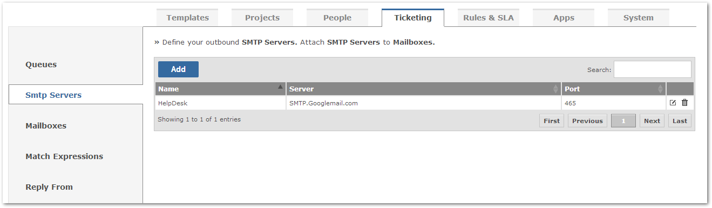
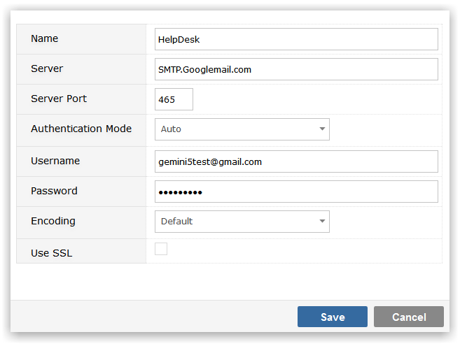
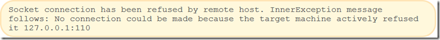

Using Outbound SMTP
Outbound SMTP lets you respond to your inbound email sender automatically.

Creating a new outbound SMTP server requires a few details.

- Name: name to associate with this definition
- Server: SMTP Server name
- Server Port: port that the SMTP server uses for outbound emails
- Authentication Mode: the authentication method
- Username and Password: username and password to connect to the SMTP server
- Encoding: chosen text encoding
- Use SSL: use secure sockets layer
When the configuration is saved, it will be immediately validated. If there is a problem with the technical configuration, you may get a message as below.
